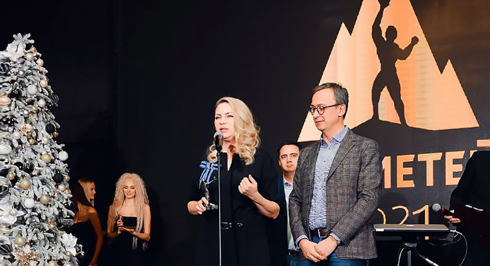
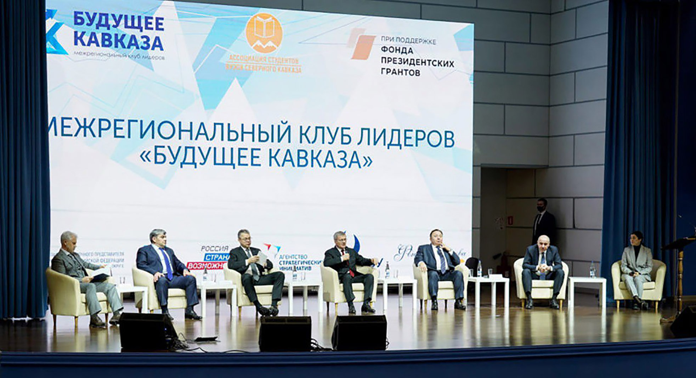
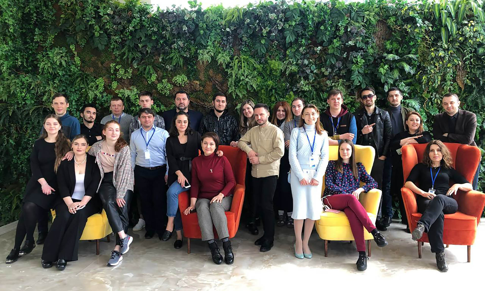
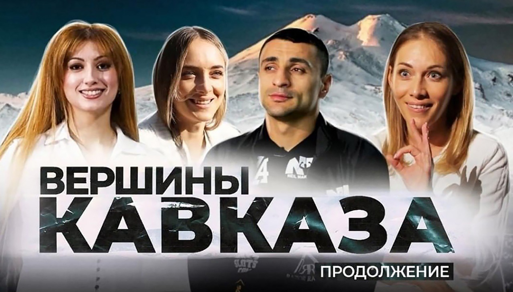
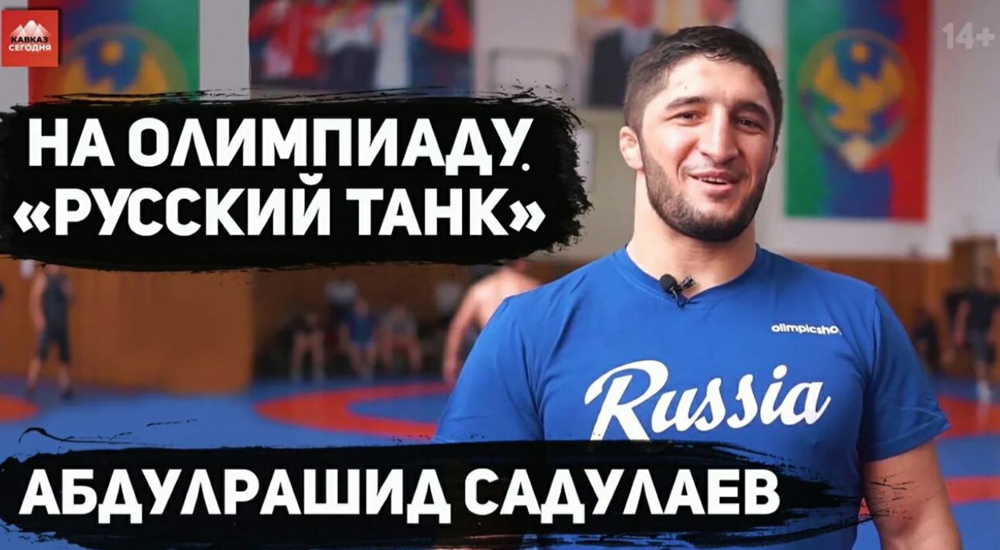

К «Вершинам Кавказа» с огнём «Прометея»
«Кавказ Сегодня» в актуальных темах 2021 года
Решение множества текущих комплексных проблем не мешало реализации на Северном Кавказе и за его пределами перспективных, «прорывных» проектов. И практически все они не обошлись без участия портала «Кавказ Сегодня» — как в плане информационного освещения событий, так и в их непосредственной реализации.
«Будущее Кавказа»
Перспектива — ключевое слово для большинства масштабных начинаний в СКФО. В числе самых крупных проектов года «Межрегиональный клуб лидеров «Будущее Кавказа».
Проект стартовал 18 февраля 2021 г. на встрече координаторов проекта с полномочным представителем Президента Российской Федерации в Северо-Кавказском федеральном округе Юрием Чайкой. Партнерами выступили АНО «Россия — страна возможностей», АНО «Агентство стратегических инициатив», Фонд публичной дипломатии им. А. М. Горчакова и Северо-Кавказский федеральный университет.
В первом этапе в проекте приняли участие более 400 молодых управленцев из коммерческого, государственного и общественного сектора. Во всех регионах СКФО открыты региональные отделения клуба. Проведены стратегические сессии, организованные мастерской управления «Сенеж».
Начиная с апреля 2021 года, проводится второй этап проекта, включающий организацию встреч участников клуба с известными деятелями государственного управления, политики, бизнеса, культуры, науки: председателем Совета при президенте РФ по развитию гражданского общества и правам человека Валерием Фадеевым, секретарем Общественной Палаты РФ Лидией Михеевой, директором фонда «Петербургская Политика» Михаилом Виноградовым, ведущим научным сотрудником Центра евро-атлантической безопасности ИМИ в МГИМО Сергеем Маркедоновым, руководителем Федерального агентства по делам молодёжи Ксенией Разуваевой, директором центра прототипирования высокой сложности «Кинетика» НИТУ МиСИС, промышленным дизайнером Владимиром Пирожковым, главным редактором журнала «Россия в глобальной политике» Федором Лукьяновым.
Результатом проекта станет формирование сетевой структуры для развития кадрового потенциала Северного Кавказа.
«Экспертная медиашкола»
Одним из ярких проектов уходящего года стала «Экспертная медиашкола», которая дала мощный импульс развитию социальных медиа, взаимодействию между блогерами и государственными институтами регионов Северного Кавказа.
Проект направлен на выявление, поддержку и подготовку специалистов по работе в публичном информационном пространстве, обмен практическим опытом и знаниями, а также активизацию работы журналистского сообщества. На семинарах проекта были задействованы десятки участников, региональные и федеральные спикеры, молодые журналисты и блогеры, представители власти, финалисты и полуфиналисты конкурсов «Лидеры России» из всех регионов СКФО.
«Экспертная медиашкола» реализована с использованием средств Фонда президентских грантов при поддержке аппарата полпреда Президента РФ в СКФО. Специалисты «Кавказ Сегодня» осуществляли не только информационную поддержку события, но и непосредственно участвовали в организации проекта.
«Северный Кавказ: территория блогеров»
Весьма заметным событием 2021 года стал проект «Северный Кавказ: территория блогеров», реализованный АНО «Лаборатория общественных проектов» совместно с порталом «Кавказ Сегодня».
К участию в проекте были приглашены 30 молодых блогеров со всего Северо-Кавказского федерального округа, которые с августа по декабрь 2021 года создавали собственные блоги в социальных сетях и наполняли их контентом. За весь период проведения Медиамарафона созданы и размещены не менее 900 материалов на актуальные темы — туризм, общество, экономика.
Командой и наставниками проекта было отобрано порядка 150 материалов для продвижения в соцсетях. Лучшие из них опубликованы на страницах портала «Кавказ Сегодня».
Интернет-премия «Прометей»
Хороший акцент финала года — награждение лауреатов интернет-премии «Прометей», которой ежегодно отмечаются наиболее полезные для общества проекты, реализуемые в сетевом пространстве.
Основным критерием оценки является наличие реального вклада в жизнь людей. С 2011 года участниками этой премии стали тысячи проектов и конкурсантов. Свыше 200 из них стали лауреатами.
В текущем году в одной из специальных номинаций — «За укрепление этноконфессионального согласия на Северном Кавказе» — победу завоевал цикл фильмов «Вершины Кавказа» портала «Кавказ Сегодня». Напомним, это большое документальное кино о людях, религиях и жизни современного кавказского мира.
И здесь уместно подробнее упомянуть о самом проекте «Вершины Кавказа».
15 ноября прошла премьера третьей серии фильма «Вершины Кавказа». Первые две серии фильма «Вершины Кавказа» вышли осенью 2020 года на YouTube канале портала «Кавказ Сегодня». В них рассказывалось о традиционных религиях Кавказа — православии и исламе, были показаны истории жителей регионов СКФО и тех, кто приехал в этот благодатный край в духовном поиске.
В третьей серии поднимается тема и других конфессий, представители которых живут на Северном Кавказе, — армяно-григорианский церкви, старообрядчества, молоканства, католичества, иудаизма, буддизма. Фильм деликатно и компетентно рассказывает о традициях и ценностях этих конфессий. Фильм снят при поддержке Института развития интернета, а также аппарата полномочного представителя Президента Российской Федерации в СКФО. Премьера также состоялась на платформе YouTube и во всех соцсетях информационно-аналитического портала «Кавказ Сегодня».
«Кавказ.Вместе»
«Кавказ Сегодня» принимал участие во многих значимых событиях, которые происходили на Северном Кавказе в 2021 году. Даже перечислить их — задача непростая.
Достаточно вспомнить проект «Кавказ.Вместе», реализованный при поддержке Института развития интернета, в рамках которого вышло 40 лонгридов и статей, 30 видеороликов — о самом главном: взаимовыручке и милосердии вне зависимости от наций и религий. О том, что всем нам посчастливилось жить в прекрасном благодатном крае. О том, что все мы разные, но абсолютно равные под этим мирным небом. О тех, кем гордится Кавказ.
«Кавказ сегодня» поддержал наших олимпийцев, в преддверии Олимпиады записав видеоинтервью с прославленным чемпионом, знаменосцем нашей олимпийской сборной Абдулрашидом Садулаевым, а потом побеседовав с медалистами Олимпиады-2020, уроженцами Северного Кавказа.
Журналисты портала разрывали свои сердца в Беслане, снимая фильм к годовщине бесланской трагедии. Также посетили родовое село героя нового времени Магомеда Нурбагандова, познакомившись с его близкими и родными. Рассказывали о казачьих традициях, кавказских танцах, национальных праздниках, брали интервью у легенд отечественной истории, освещали самые актуальные события в оперативном режиме и с максимально профессиональным подходом.
И самое главное, подводя итоги года: информационно-аналитический портал «Кавказ Сегодня» уверенно смотрит в будущее и готов решать новые задачи — ещё более интересные и ответственные.